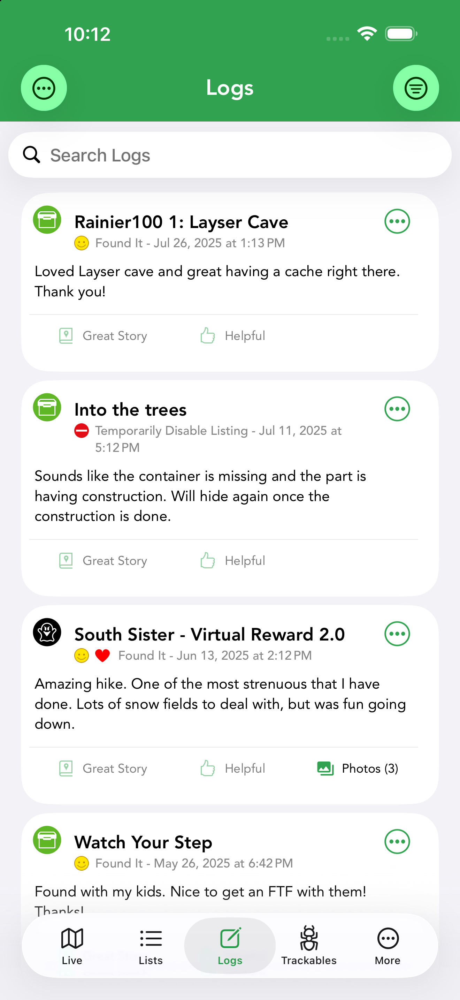
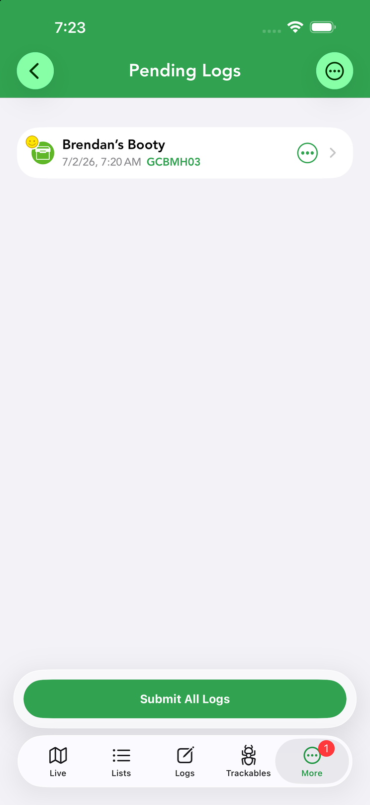
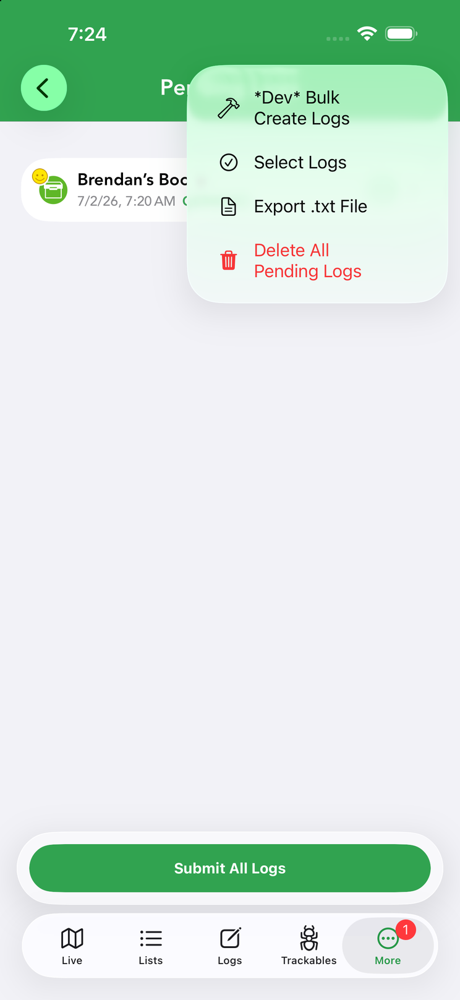
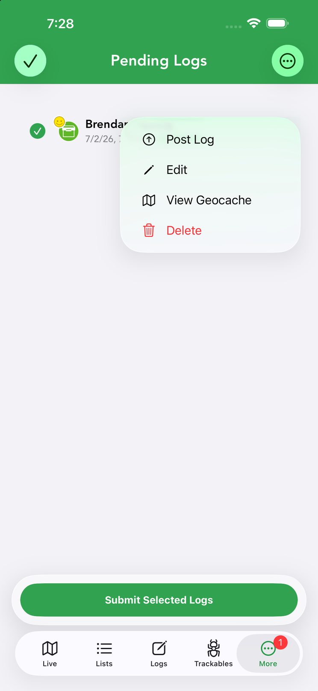
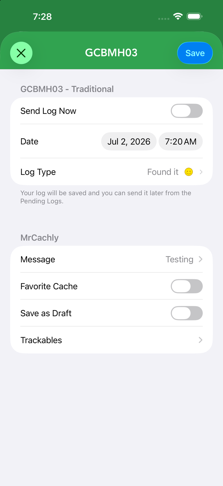

Logs, Drafts & History
The Logs tab is mission control for everything you’ve written: logs waiting to upload, ones that hit an error, your saved drafts, and your full logging history.





The Logs Tab
The Logs tab lists the logs you’ve written, newest first. Each row shows the cache name, the log type (Found It, DNF, Write Note…), the date and time, any badges your log earned (such as Great Story or Helpful), and a photo count when images are attached. You can sort (by date, cache, type) and filter (by log type or date range) to find a past log quickly — useful for revisiting a write-up or checking what you logged on a busy caching day. Tap the profile icon to open the cacher, the cache name to open its details, and green underlined coordinates in a log to copy them or navigate.
Per-Log Menu
The ⋯ button on each log entry offers: Share, Translate the text, Copy cache code, Add images, Edit and Delete.
When you delete a log on a cache you own, Geocaching.com requires a reason — Cachly prompts you for one and sends it to the log’s author. Deleting your own log on someone else’s cache just asks you to confirm.
Pending Logs
Pending logs are finished logs stored on your device, queued to send to Geocaching.com. A log lands here when you compose it with Send Log Now turned off, or when you post without connectivity — deep in a forest, abroad without data, or in airplane mode. This is what makes confident offline logging possible: write now, send later.
Find them under More › Pending Geocache Logs (the More screen shows a count next to the entry, so you can see at a glance whether anything is waiting). Each pending log lists the cache name, the date and time you wrote it, and the GC code. When you’re back online, tap Submit All Logs to upload everything at once, or post logs individually.
Tap a pending log’s ⋯ button for its actions:
- Post Log — submit this one log to Geocaching.com now.
- Edit — reopen the full compose screen: change the date, log type, message, favorite point, Save as Draft or trackables, exactly as when you first wrote it.
- View Geocache — open the cache’s details.
- Delete — discard the pending log.
Managing Pending Logs
The ⋯ menu at the top of the Pending Logs screen works on the whole queue:
- Select Logs — enter select mode with a checkbox per log, then submit or delete just the selected ones in bulk. Handy after a group day when some logs are ready and others still need a sentence or two.
- Export .txt File — export your pending logs as a field-notes text file, a useful backup before a bulk submit (or for importing elsewhere).
- Delete All Pending Logs — clear the entire queue after confirming.
Submission Errors
If a log can’t be posted (a network problem, an expired session, or a server rejection), it appears under pending log errors with the reason. From there you can review, fix and retry it rather than losing your write-up.
Drafts
Drafts (field notes) are logs you started but haven’t posted. Open one to finish writing, change the type or date, then post or keep saving.
Online Drafts (More › Online Drafts) are drafts stored on geocaching.com — they sync across your devices and the website. Edit a draft’s message (with keyword and template support), add photos with the green + above the keyboard, then submit it as a full log via the ⋯ menu → Post Log, or by tapping Send the log from within the draft itself.
History
More › History lists the caches you’ve recently viewed, so you can jump back to one without searching again. Search the list to narrow it down, tap a cache to reopen its details, or use Clear to wipe the history.